S01 · 末页人物卡
修复前
最终原生构建
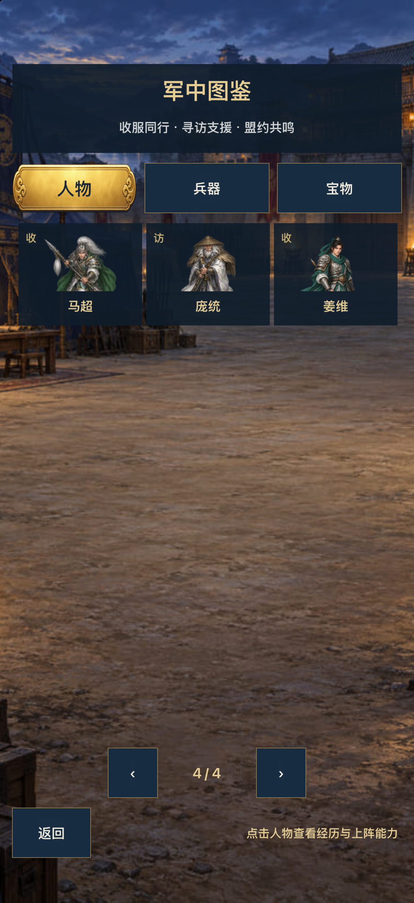
尚未全部验收通过。两次原生完整十关已录。最后一轮第十关120.98秒、第七/十关Boss偏长；最终HP已校准，尚未原生复测。iPhone受免费签名名额阻塞，性能不报通过。
GitHub GPT核查入口 · 46项实际状态 · 逐关时长 · 参数前后与依据 · 实施/具体缺口 · 角色/动作矩阵
实际Cocos原生Debug独立内存样段，无走位操作，非自然首通；不改存档。无音轨，不证明声音与触感。最终人物/支援显示与门/宝物修复已接入。
专用新模拟器零进度，兵器等级1，正常解锁配装和实际触控按钮；原速、未剪接，包含菜单/暂停。仅缩小分辨率和压缩。最后HP/详情/HUD及门窗口/宝物入库修复前的版本，具体差异见参数与媒体清单。
原生逐关原始测量 · 最终模型校准 · 版本/媒体对应 · 最终源码指纹
左为用户问题原图，右为最终Cocos原生内存夹具；保持对应关卡/角色/兵器/配队，设备分辨率与安全区不同，不宣称像素同态。静图不替代触控/性能验收。

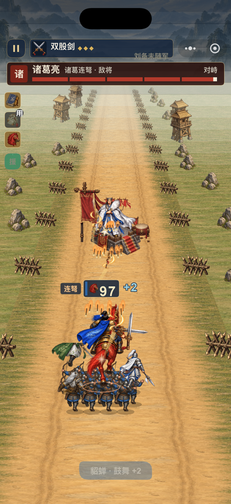
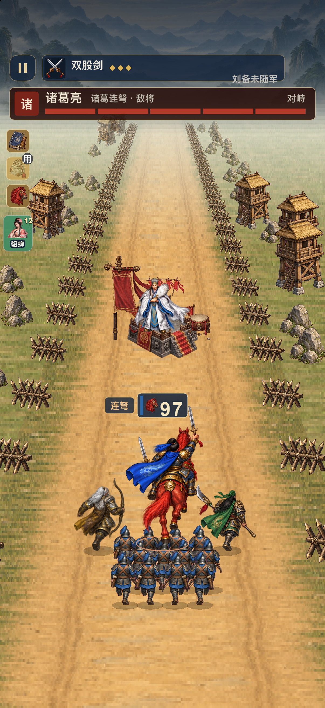

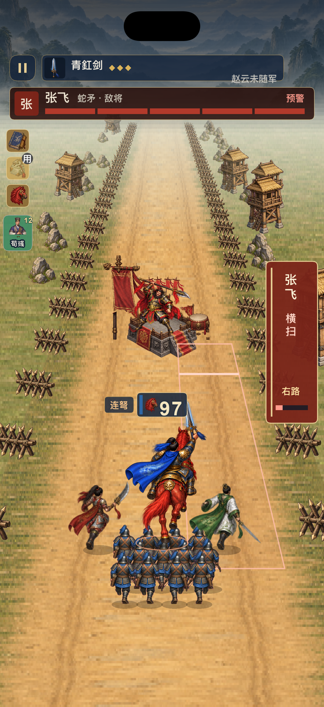
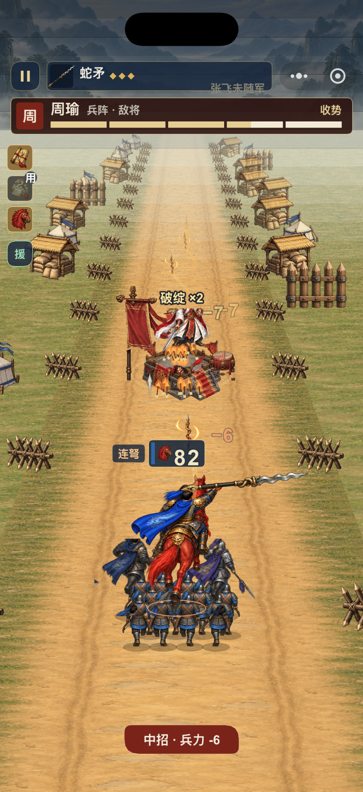
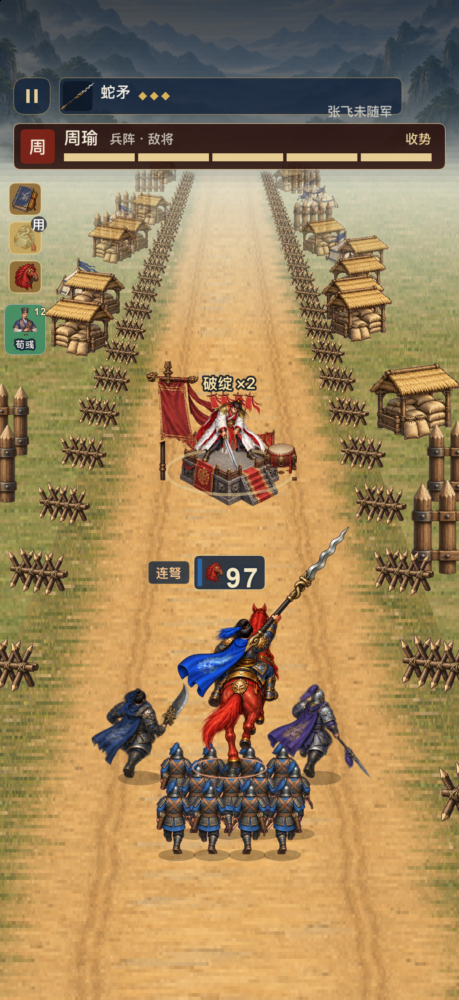

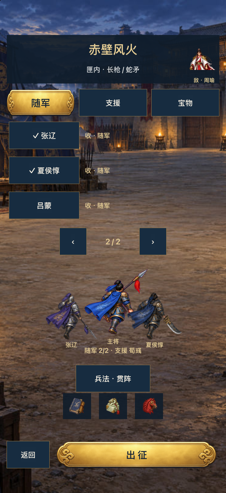
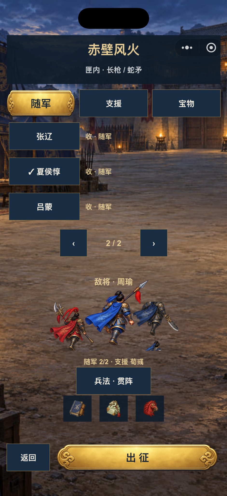
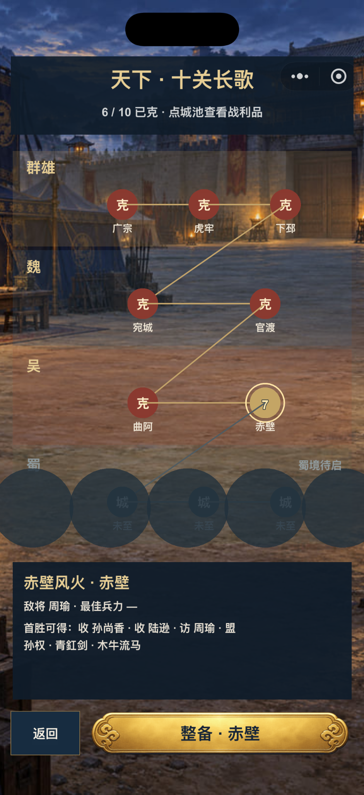
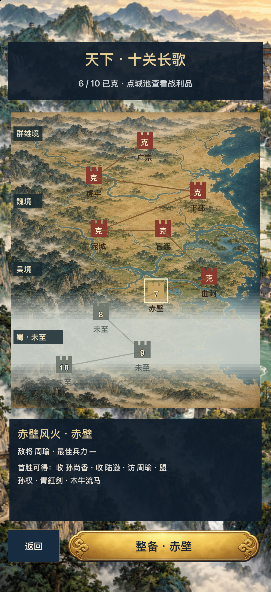
九位缺少全身素材的人物已经补图；以下是实际原生取图。其余30人详情在comparison目录。
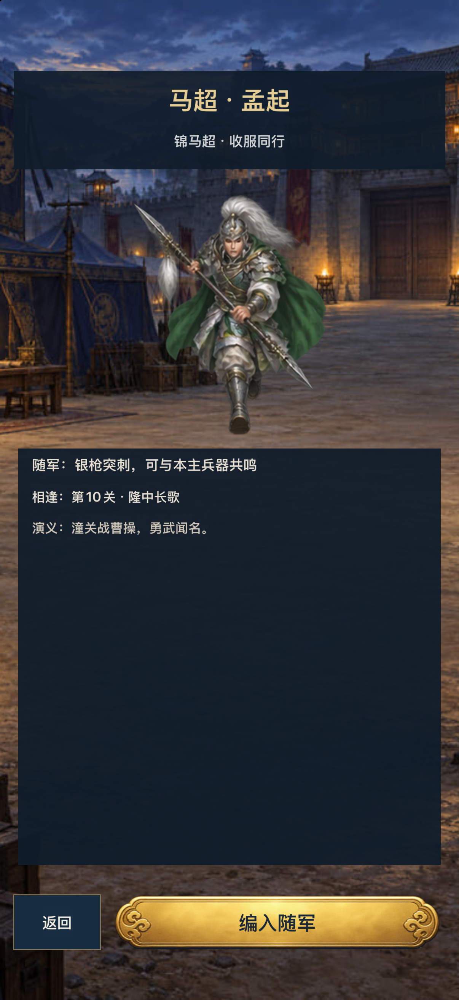
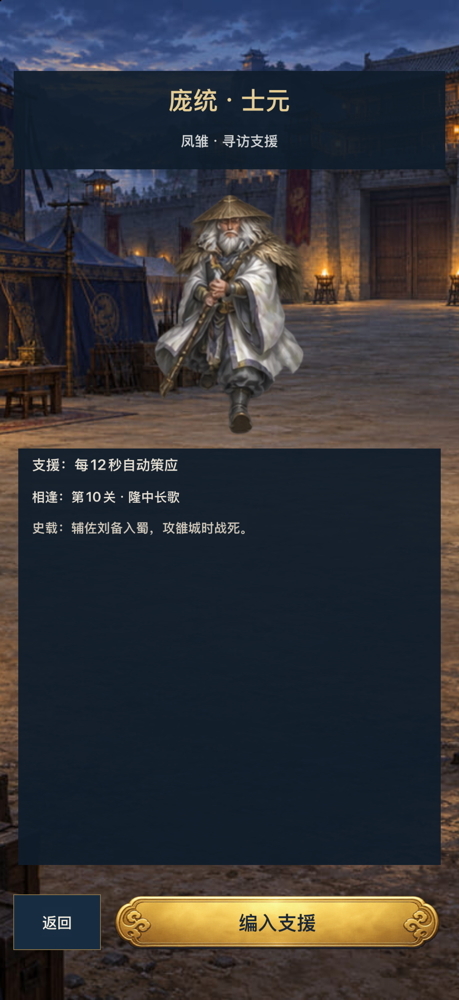
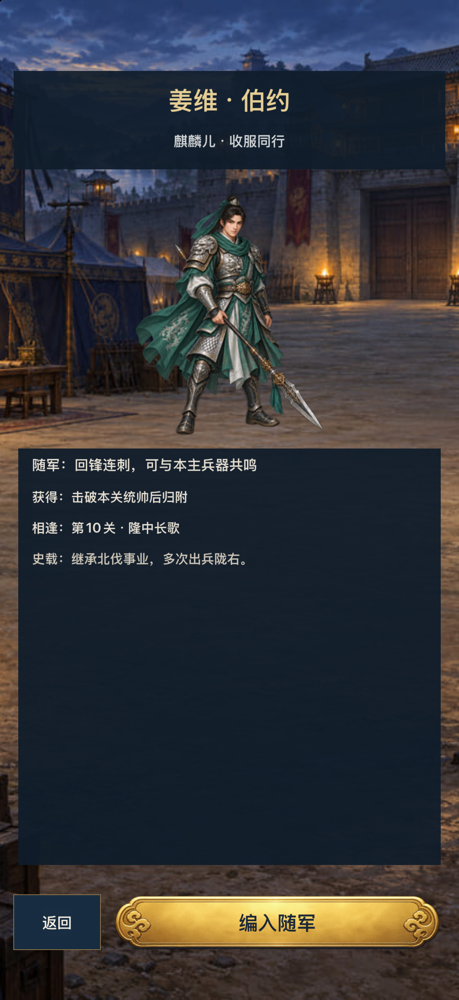
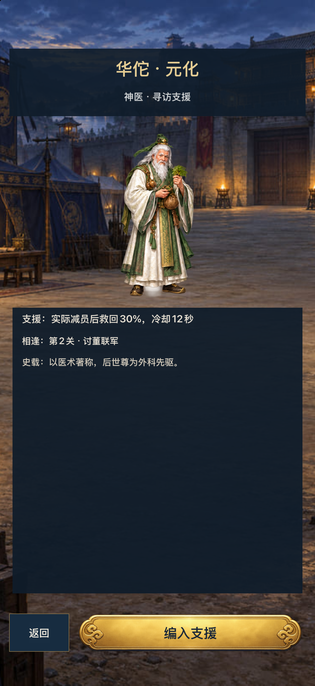